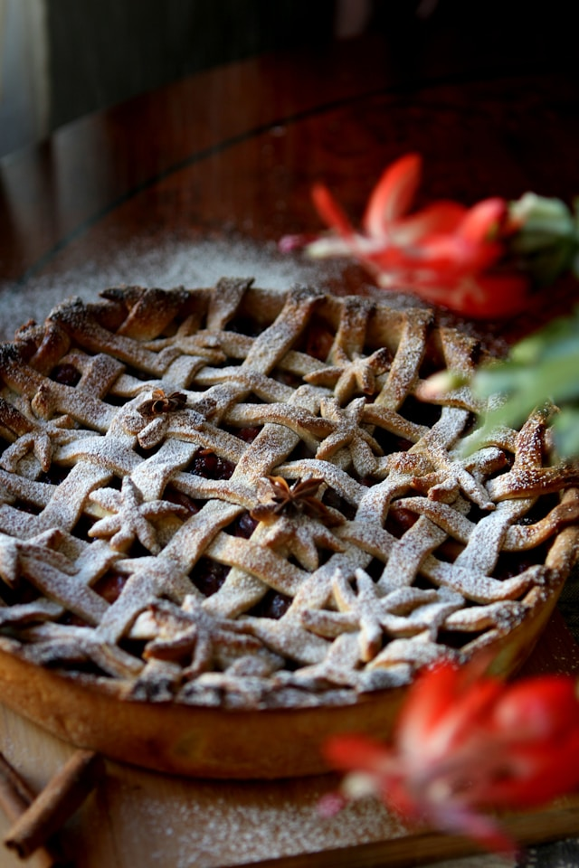

Shepherd's Pie

Description
Shepherd's Pie is a traditional British dish made with minced lamb cooked in a rich gravy with onions, carrots, and peas, topped with creamy mashed potatoes and baked until golden and crisp on top. It's heary, warming, and perfect for a cosy family meal.
Ingredients
Filling
- 1 tbsp olive oil
- 1 onion, finely chopped
- 2 carrots, finely diced
- 2 garlic cloves, crushed
- 500g minced lamb
- 2 tbsp tomato puree
- 1 tbsp Worcestershire sauce
- 1 tsp fresh thyme leaves
- 250ml lamb or beef stock
- 100g frozen peas
- Salt
- Pepper
Mashed Potato Topping
- 900g potatoes, peeled and cut into chunks
- 50g butter
- 100ml milk
- Salt
- Pepper
Steps
Filling
- Heat the olive oil in a large frying pan or saucepan over mediumm heat.
- Add the onion and carrots, and cook for about 5 minutes until they start to soften.
- Stir in the garlic and cook for 1 minute more.
- Add the minced lamb and cook until browned all over, breaking it up with a wooden spoon.
- Stir in the tomato puree, Worcestershire sauce, and thyme.
- Pour in the stock, bring to the boil, then reduce the heat and simmer for 20 minutes until thickened.
- Stir in the peas, season well with salt and pepper, and remove from the heat.
Mashed Potatoes
- Boil the potatoes in salted water for about 15 mintues until tender.
- Drain well and return to the pan.
- Add the butter and milk, then mash until smooth and creamy.
- Season to taste with salt and pepper.
Shepherd's Pie
- Preheat the oven to 200*C/Gas Mark 6.
- Spoon the lamb filling into a large ovenproof dish.
- Spread the mashed potato evenly over the top, starting at the edges to seal in the filling.
- Use a fork to create a decorative pattern on the surface.
- Sprinkle with cheddar cheese for a golden crust.
- Bake for 25-30 minutes, until bubbling and lightly browned on top.